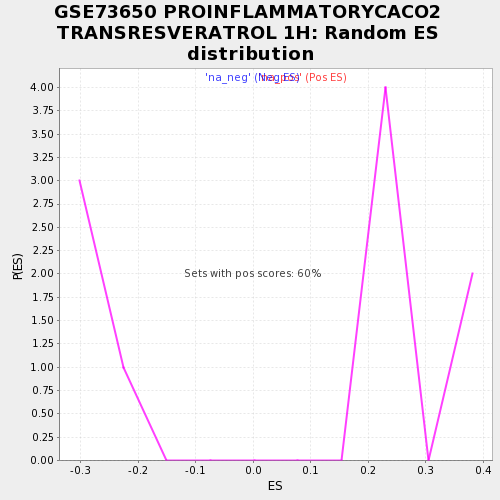

| | | Dataset | testA |
| Phenotype | NoPhenotypeAvailable |
| Upregulated in class | na_pos |
| GeneSet | GSE73650 PROINFLAMMATORYCACO2 TRANSRESVERATROL 1H |
| Enrichment Score (ES) | 0.5422704 |
| Normalized Enrichment Score (NES) | 1.9017644 |
| Nominal p-value | 0.0 |
| FDR q-value | 0.020485854 |
| FWER p-Value | 0.3 |
Table: GSEA Results Summary
 Fig 1: Enrichment plot: GSE73650 PROINFLAMMATORYCACO2 TRANSRESVERATROL 1H
Fig 1: Enrichment plot: GSE73650 PROINFLAMMATORYCACO2 TRANSRESVERATROL 1H
Profile of the Running ES Score & Positions of GeneSet Members on the Rank Ordered List

Fig 2: GSE73650 PROINFLAMMATORYCACO2 TRANSRESVERATROL 1H: Random ES distribution
Gene set null distribution of ES for GSE73650 PROINFLAMMATORYCACO2 TRANSRESVERATROL 1H